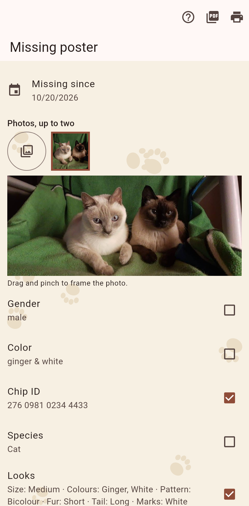

A poster for the lamp post, from the record: the cat's name in street letters, missing since, the home's address, the phone in a black band, the looks, a standing text and a code.

Every filled field of the cat and its home is a tick; add a line the record lacks. Up to two photos, taken straight from the gallery at full size and framed by dragging and pinching. The page shows the poster as it will print; it holds still while you pinch a frame. A code per ticked ID and location prints next to the cat(a)log code, which opens the cat in another cat(a)log.
A cat that ran away from its home gets the day from its move; a cat from a flier the day the flier says. When the flier gave none, the tile says so with a warning sign, so a guessed day never looks like one that was read.
Share as PDF or print, both in the bar. The poster prints black on white in letters read from across the street.